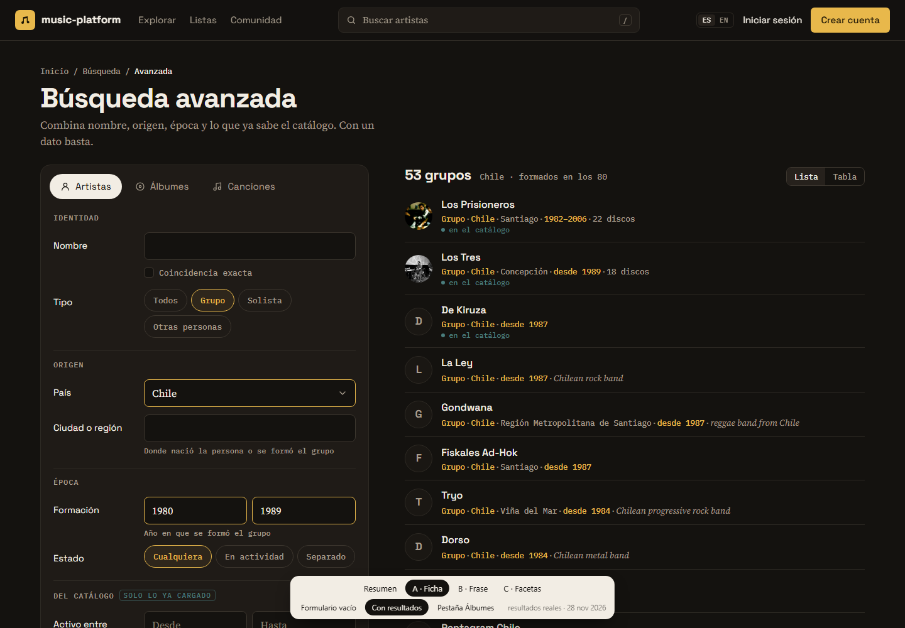
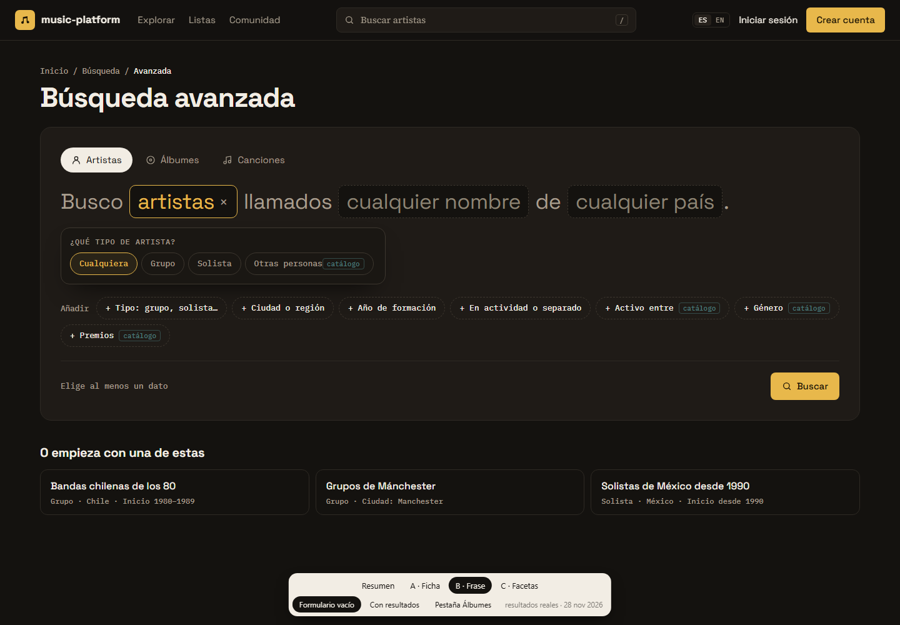
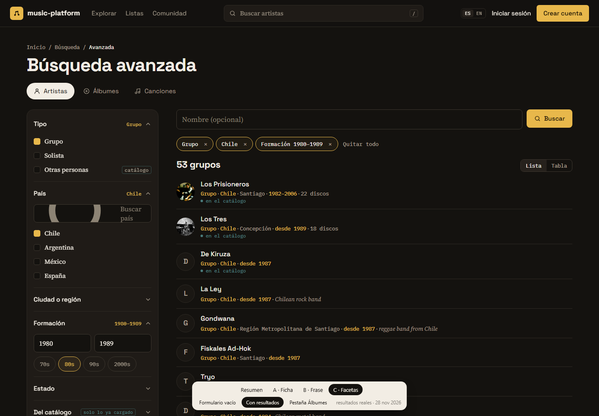

Búsqueda avanzada: auditoría y tres direcciones
Revisión de /search/advanced sin sesión (28 nov 2026, main 94b31f12), a 1440 y 390 px, con las tres pestañas y una búsqueda real («grupos de Chile formados entre 1980 y 1989», 53 resultados).
Problemas detectados
- Marco estrecho y título pequeño: la página usa 1024 px (
max-w-5xl) y un h1 de 24 px, mientras que /search ya usa 88rem y títulos de página grandes. - Formulario largo: Artistas tiene 13 campos en cuatro grupos. En el teléfono mide 1.297 px y el último grupo empieza a más de 1.000 px. En escritorio, el botón Buscar queda al pie de una tarjeta de 830 px.
- Lo que cambia el resultado va en letra mínima: «Del catálogo: solo buscan en lo que ya está» convierte la búsqueda en solo-catálogo, pero se dice en monoespaciada de 11 px. Hay 10 textos de menos de 12 px.
- Formulario y resultados no conviven: tras buscar, el formulario se recoge en una barra de criterios y para cambiar un dato hay que reabrirlo («Editar búsqueda»).
- Selects nativos para elecciones cortas: Tipo y Estado tienen 3–4 opciones dentro de un desplegable; como pastillas se verían de un vistazo.
- Lo que funciona: los grupos con nombre, los ejemplos «Prueba con», la barra de criterios, los datos filtrados destacados en ámbar, Lista/Tabla y la barra de envío fija en el teléfono.
Las tres propuestas

A · Ficha
Formulario estilo Metal Archives, con la etiqueta a la izquierda y todo a la vista, fijo a la izquierda; los resultados quedan al lado. Pastillas para Tipo y Estado, y «solo lo ya cargado» como etiqueta visible.
- A favor: se cambia un dato y se ve el efecto sin recoger nada; denso, para quien busca mucho.
- En contra: en el teléfono vuelve a ser un formulario largo (2.272 px vacío); la columna fija necesita su propio desplazamiento.

B · Frase
La búsqueda se escribe como una frase con huecos («Busco grupos de Chile formados entre 1980 y 1989») y el resto de criterios se suma con «+ Añadir».
- A favor: la más amable y la más corta sin criterios; se lee como lo que se pide.
- En contra: con muchos criterios la frase se alarga; cada hueco necesita su propio desplegable (más trabajo de accesibilidad); en el teléfono el primer resultado baja a 858 px.

C · Facetas
Primero los resultados: filtros en una columna izquierda por secciones plegables (casillas para Tipo y País, rango con atajos de década), el nombre arriba de la lista y criterios aplicados como pastillas. En el teléfono, «Filtros · 3» abre una hoja inferior.
- A favor: el patrón más conocido (tiendas, Discogs); el primer resultado sale a 484 px en el teléfono; encaja con la columna lateral nueva de /search.
- En contra: MusicBrainz no da recuentos por faceta, así que los filtros no muestran cifras; requiere «Aplicar» (cada cambio es una búsqueda).
| Criterio | A · Ficha | B · Frase | C · Facetas |
|---|---|---|---|
| Primer resultado en el teléfono | 436 px (formulario recogido) | 858 px | 484 px |
| Cambiar un criterio con resultados a la vista | Sí | Sí (la frase) | Sí |
| Coherencia con /search rediseñada | Media | Baja | Alta |
| Coste de implementación | Medio | Alto | Medio |
Recomendación: C · Facetas, con las pastillas de A
C resuelve lo principal: los resultados se ven desde el principio, cada criterio se cambia sin reabrir un formulario y el teléfono gana una hoja de filtros en lugar de 1.300 px de campos. Además repite el patrón de columna lateral que /search ya usa. De A tomaría las pastillas para Tipo, Estado y Tipo de lanzamiento, y la etiqueta visible «solo lo ya cargado». De B, la idea de mostrar los criterios aplicados como texto legible encima de la lista.
Mientras tanto se pueden hacer, elija la dirección que elija: marco de 88rem y título de página, sustituir los selects cortos por pastillas, y subir el aviso «Del catálogo» a una etiqueta visible.
Mockups estáticos; los resultados son reales (API local + MusicBrainz, 28 nov 2026). Los atajos de década («80s») son una propuesta: hoy solo hay rango de años.